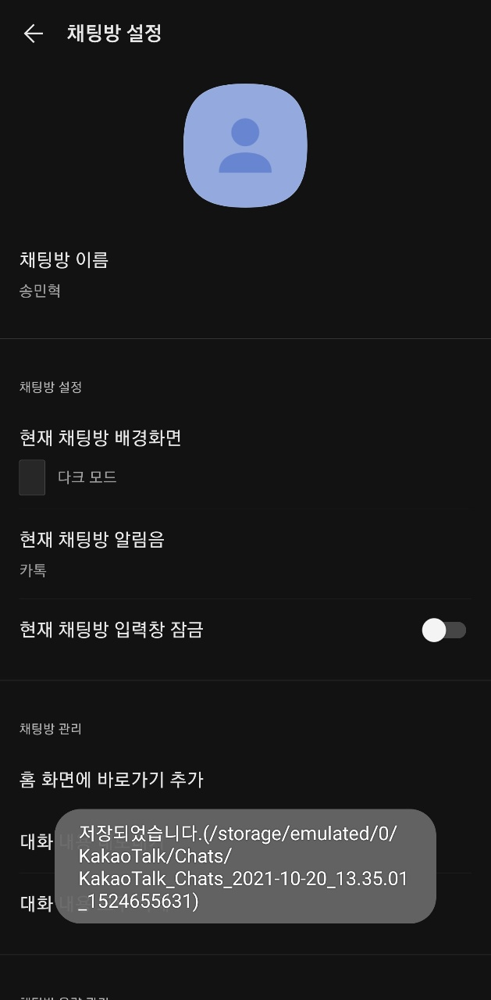

/parser/
모든 메세지를 내부저장소에 저장했는데 앱에 안 뜰 때
1. 저장 위치 체크
카카오톡에서 대화 내보내기를 했을때 카톡 버전, 기종 등에 따라 카톡 대화가 저장된 위치가 달라질 수 있습니다.
카톡 분석기 앱에 저장 위치가 등록돼있지 않을경우 내보내기한 대화가 안보이실 수 있습니다.
카톡 내보내기가 완료되는 순간 기기 밑부분에 "저장되었습니다 (<저장위치>)" 라고 뜨는데 이 메세지를 스크린샷 찍어서 아래 이메일로 보내주시면 빠른 시일 내에 저장소 위치를 등록해드릴 수 있습니다.
예시:

2. 권한 체크
안드로이드 10부터 앱을 장기간 사용하지 않을 시 부여된 권한을 제거합니다.
확인 절차:
- 카톡 분석기 아이콘을 오래 누른다
- 애플리케이션 정보 화면
- 권한
- "거부됨" 밑에 "저장공간"이 있다면 눌러서 허용해주면 된다